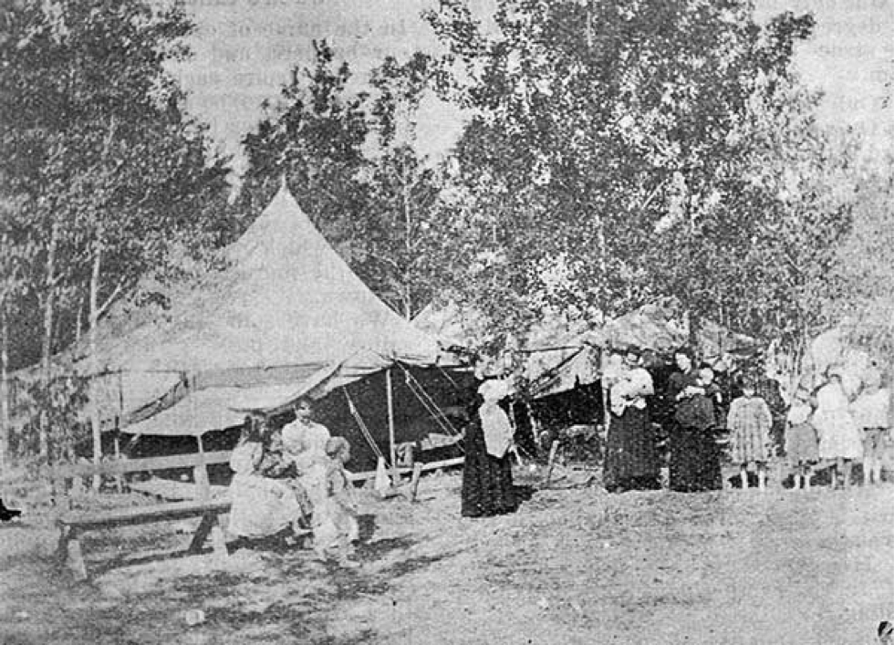
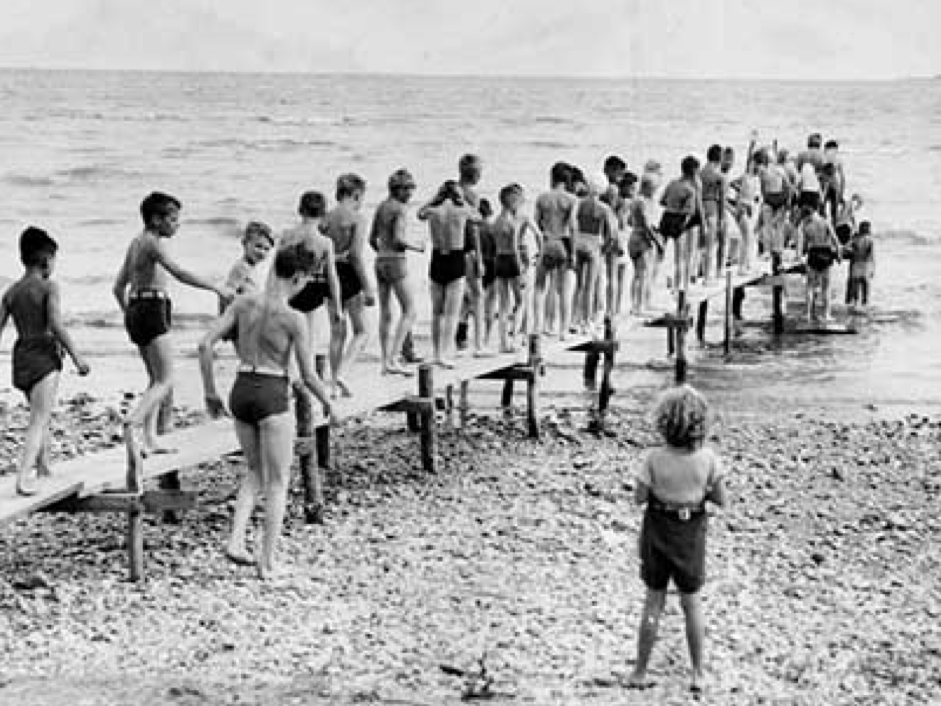

-1-MasterItem.svg)
Stories of Westminster United Church & its People / Page
137
FRESH AIR CAMPS
In the 21st Century the term Fresh Air Camps doesn't really
register on us. But from the early 20th and even 19th centuries
the term referred initially to a church outreach program
directed to the needs of children “from the slums.”
The concept was first introduced in London, England in 1877,
an effort to give children in London’s White Chapel district a
country holiday away from the slums. In Western Canada,
the first camp was here in Winnipeg.
The deaconesses of Winnipeg’s All People’s Mission are sometimes credited with establishing
a camp on the, then, pastoral Norwood Grove Flats (a low lying area now filled
with houses and
businesses surrounded by dykes to keep out the spring floods from the Red). The
year was 1905,
the area served by streetcars which people used to reach the camp. This project
was a response
to the miserable slum conditions that exited in Winnipeg’s north end at the turn of the century
where summer epidemics of typhoid were an annual occurrence.
Another account credits the Salvation Army’s Mrs. Major Jennie
Southall for taking charge of the camp together with four S.A.
officers. A modestly paid, recently graduated Nurse Mcleod
and her five assistants provided care for sick children. One large
tent was designated ‘hospital.’ 82 children and 34 mothers
attended one or two-week stays that summer.
From that start the program was adopted widely with camps being
established at Gimli (Camp Sparling), and at Loni Beach (Camp
Robertson). These camps later amalgamated into a United Church
Table
of Contents


Camps and Clubs